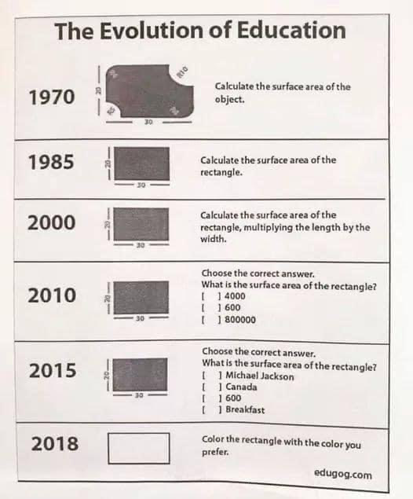

▼
Thoughts
Modular Programming
The Rational Programmer
The Design Recipe
Apology
All As
Teaching PL
NSF
The Laffer Curve of Types
Referential Transparency
Why/
How do I get a Ph
D
Free Speech
Developing Developers
Growing a Programmer
Unions for Ph
D Students?
Racket
is ...
Why teach Ph
D core courses, with programming languages
Danger:
unsafe languages
What should the core achieve?
Python for Asset-
Backed Securities
Measuring education
Refereed conferences, not!
Why teach programming languages
.
8.4.0.4
contents
← prev
up
next →
All As

2020: "How do you feel about the rectangle today?"
contents
← prev
up
next →